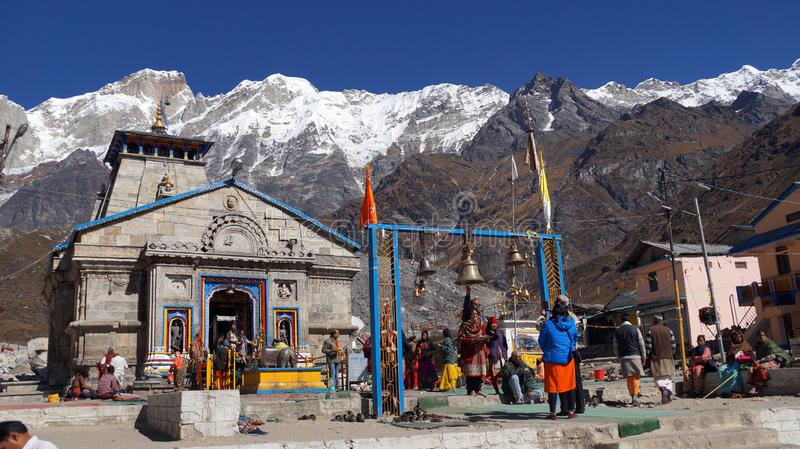

TRAVEL VLOG
EXPERIENCE OF TRAVELLER :)

TRIP TO KEDARNATH.......:-
Kēdārnāth Mandir (Kedarnath Temple) is a Hindu temple (shrine) dedicated to Lord Shiva (Mahadeva). Located on the Garhwal Himalayan range near the Mandakini river, Kedarnath is located in the state of Uttarakhand, India. Due to extreme weather conditions, the temple is open to the general public only between the months of April (Akshaya Tritiya) and November (Kartik Purnima, the autumn full moon). During the winters, the vigraha (deity) from Kedarnath temple is carried down to Ukhimath and where the deity is worshiped for the next six months. Kedarnath is seen as a homogenous form of Lord Shiva, the 'Lord of Kedarkhand', the historical name of the region.
Enter for more details.
Enter for start journey.
HAPPY JOURNEY ........OM NAMAH SHIVAY